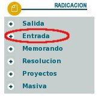
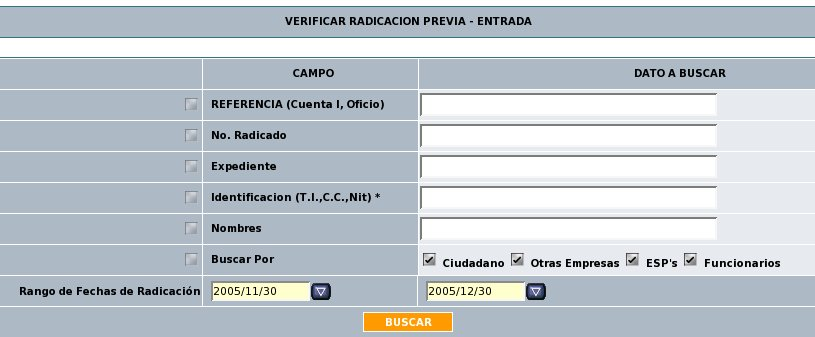
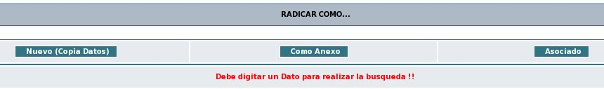
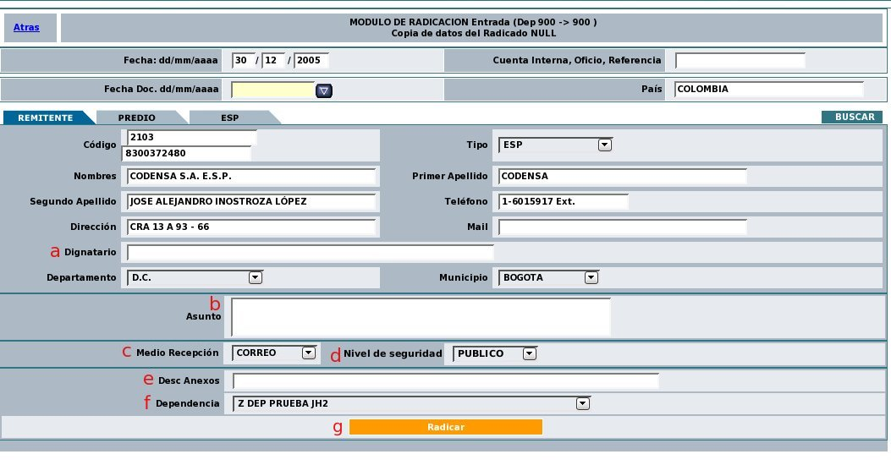

2.
S: Despliega una vista donde
se realiza una verificación previa para saber si el documento ha
sido recibido por otro medio y ya
se encuentra radicado, o para realizar las relaciones de anexo y
asociado
según sea el caso.

Se puede realizar búsquedas de radicados existentes en el sistema de acuerdo los siguientes criterios:
Cajas de texto: Referencia (Cuenta interna, No. de Oficio), No. de Radicado, Expediente, Identificacion (T.I.,C.C.,Nit), Nombres.
Fecha
de rango de búsqueda: Por defecto se muestra el
último mes de
acuerdo a los parámetros solicitados. El rango de fecha se puede
ampliar si se desea.
3.
A: Da click en el botón "Buscar"
4.
S: Despliega la lista de los radicados que cumplan con los
parámetros de búsqueda con tres botones:
"Nuevo (Copia datos)", "Anexo", "Asociado".

5.
A: Selecciona el botón "Nuevo (Copia Datos)"
6. S: Despliega el formulario de
radicación con la información de:

Un campo que muestra por defecto la fecha
de hoy y se
encuentra rotulado como “Fecha dd/mm/aaaa”.
Una caja de texto en estado habilitado con el
rótulo “Cuenta Interna, Oficio, Referencia”.
Un objeto calendario en estado habilitado con
el rótulo “Fecha Doc. dd/mm/aaaa”.
Una caja de texto en estado habilitado que por
defecto contiene el dato “COLOMBIA” y que puede ser modificado
por el usuario rotulado como “PAIS”
La
segunda sección está compuesta por tres pestañas
rotuladas como “Remitente”, “Predio”
y “Empresa” con las que se llenarán los datos de los
terceros a quienes hace relación el documento y un botón
en estado habilitado“BUSCAR”
con el que se alimentarán las cajas de texto de:
código, Tipo, Nombres, Primer Apellido, Segundo Apellido,
Teléfono, Dirección, Mail, Departamento,
Municipio.
a. Una caja de texto en estado habilitado
con el
rótulo “Dignatario”
b. Una caja de texto en estado habilitado con el
rótulo “Asunto”
c. Una lista desplegable en estado habilitado y por
defecto seleccionada la opción “- Seleccione -” y
rotulada como “Medio de recepción”.
d. Una lista desplegable en estado habilitado y por
defecto seleccionada la opción “Público" y
rotulada como “Nivel de seguridad"
En esta lista se tendrán en
cuenta los campos:
- "Público": El documento se
podrá ser consultado por cualquier usuario.
- "Confidencial": El documento mantendr? un nivel de confidencialidad y solo podr? ser visto por el usuario actual.
e. Una caja de texto en estado habilitado
con el
rótulo “Descripción de Anexos”.
f.Una lista desplegable en estado habilitado que por
defecto debe mostrar el nombre de la dependencia del usuario que
está radicando y rotulada como “Dependencia”.
g. Un botón en estado habilitado con el
texto “Radicar”
7. A: Da click en el botón "Radicar"
8. S: Genera el número
de
radicación de entrada
(-2) de acuerdo al consecutivo correspondiente para la dependencia que
se
Este número será el que va a identificar el documento durante todo el proceso.